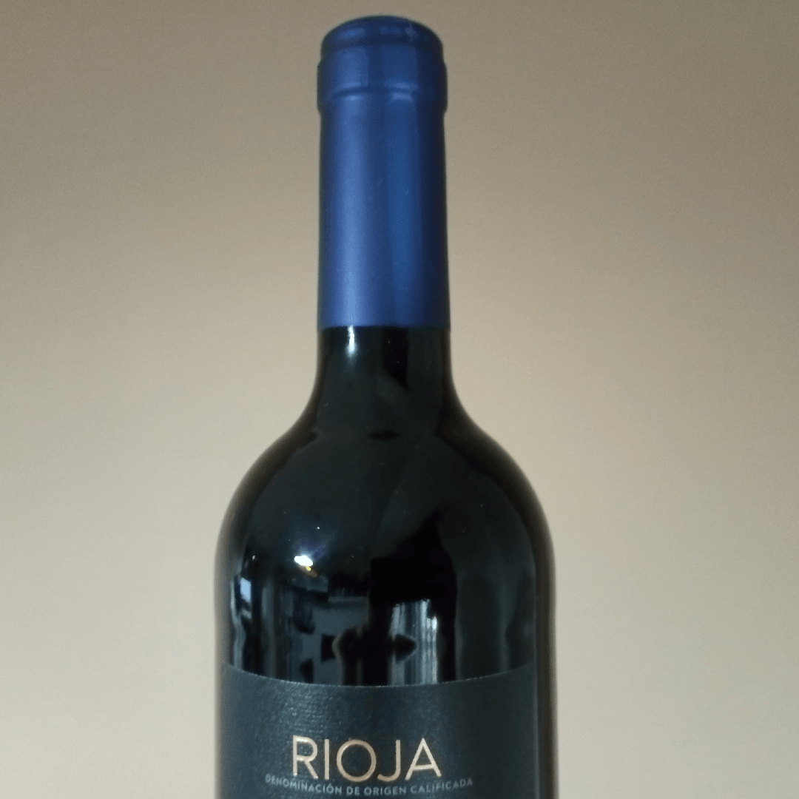

El cuello de botella
September 9, 2026 | ES Ver en LinkedIn
 Miguel García
Miguel García
El cuello de botella del software en tiempos del x10. O el x100. O el x1000.
Qué duda cabe, gracias a la IA, entregamos antes.
El famoso x10, el x100 o el x1000 ya puestos, según vaya el día y el efecto que haga en nuestro cuerpo serrano el café instantáneo marca blanca (poco, ya os lo digo yo).
Eso si ChatGPT, Claude, o uno de estos, no se ha caído o se nos han acabado los tokens.
En esos momentos, toca documentar, aprovechar para hacer las tareas que vamos retrasando (evitando, más bien).
Programar no, que programar "como antes" es de dinosaurios. El x1. O el 2x1 si estás de oferta.
Y ojo, que no lo digo yo, que soy un pringao. Lo dicen "los que saben". Eso dicen ellos, que saben. Y lo del x1000. Y si lo dicen ellos...
Yo, que soy más de andar por casa, digo otra cosa.
Que sí, que entregamos antes.
Pero eso, en sí mismo, no es más que lo ya dicho: que entregamos antes.
Que ya lo hemos subido, que está en producción, mira qué chachi nos ha salido y lo útil que es. Hasta bonito, fíjate.
Si es que "semos" los mejores. Bueno, y Claude también, claro. Nos ha ayudado, se equivoca y tal, pero sí, nos ayuda a acabar antes las cosas. Pero no te puedes fiar del todo, ¿eh?
Y pasan los días, no recibimos feedback.
No news, good news. Eso dicen, ¿será verdad? No siempre.
Consultamos los logs de la aplicación: estupor.
No lo utiliza nadie. Esto es, ni el Tato. Concretamente, el Tato que se junta con Chicha y Clodoveo. Lo buscáis, no os lo voy a decir todo.
Si acaso, ha quedado registrada alguna pruebecita. Ah, no, que esa la hice yo.
Te alarmas, preguntas, te dicen: es que se están haciendo los remolones, que están acostumbrados a la Excel.
Te ofreces a realizar una formación (la tercera ya): no, si lo tienen más o menos claro, pero como tienen mucha faena, pues no ven el momento adecuado para empezar.
Pues por por eso, si es para quitarles faena, que lo hace la app todo en un plis plas, que se van a ahorrar el 80% del trabajo tirando por lo bajo...
Ya, ya, pero es que andan táaaaaaaan liaos. A ver si la semana que viene, ya si eso. Yo te informo, no te preocupes. Tú sigue con el x100.
Y eso, así a pelo, sin consultar la Wikipedia ni nada, se llama: la resistencia al cambio.
Es decir, un cuello de botella, de toda la vida del Señor.
El eslabón que casca la cadena: x1000 -> el Tato. Y de ahí no pasa.
¿De qué sirve subir a producción un capazo de funcionalidades, si, al final, la adopción por parte del usuario es la que es?
El usuario necesita tiempo, persuasión, venderle la moto, demostrarle que es bueno para él (repito: para él).
Si no, pues se pone de lado, a ver si no nos damos cuenta.
Es normal, todos somos usuarios de algo, ¿verdad?
Hay quien recurre al soborno, la amenaza o la extorsión, pero no lo recomiendo. Al final te pillan.
Bueno, pues lo que quería decir, es que hay que cuidar todos los eslabones de la cadena, no solo el x1000000.
Pero tampoco me hagáis mucho caso, qué sabré yo.

Créditos imagen: Yo conmigo mismo.